Univariate Spectral Density with Lag Window
Univariate-Lag
Tutorial
- Open the sample project file in Origin, go to Folder Spectral Analysis using the Project Explorer. Activate the workbook Univariate spectral data.
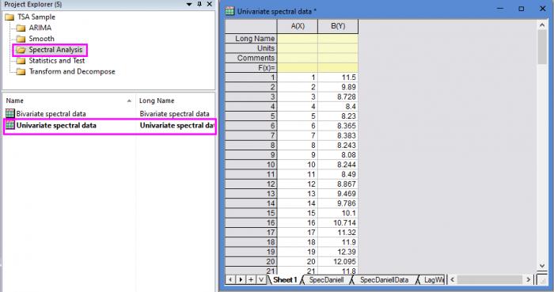
- Highlight column B in worksheet. Click the Time Series Analysis App icon
 in the Apps Gallery window.
in the Apps Gallery window.
- Choose Spectral Analysis tab. Click Univariate Spectral Density with Lag Window icon to open the dialog.
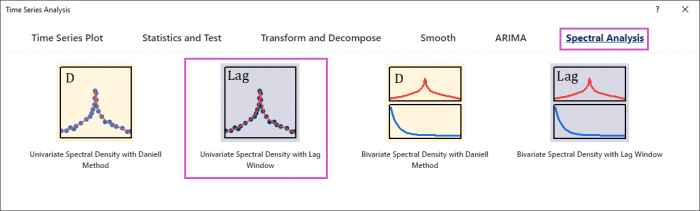
- In the Setting branch, choose Mean correction. Enter 0.2 in Tapering Proportion. Choose Parzen window type. Enter 50 in Cut-off of Lag Window.
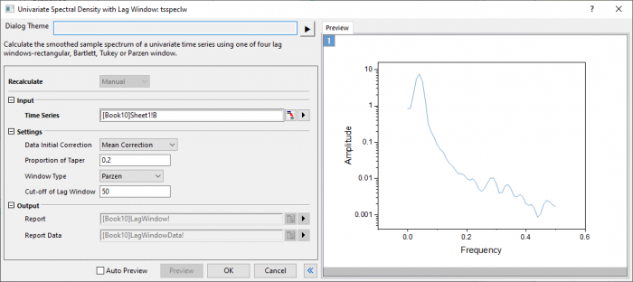
- Click Preview button to display smoothed spectrum.
- Click OK button to output the report.
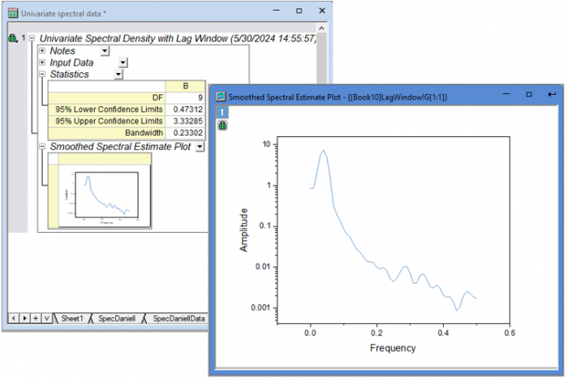
Algorithm
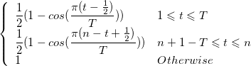
- where
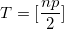
and  is the tapering proportion.
is the tapering proportion.
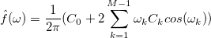
- where
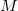
is the window width, and is calculated for frequency values
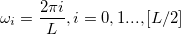
- where [ ] denotes the integer part.
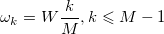
- which for the various windows is defined over
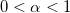
by
- rectangular:
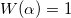
- Bartlett:
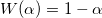
- Tukey:
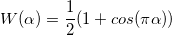
- Parzen:
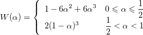
Reference
- nag_tsa_spectrum_univar_cov (g13cac)